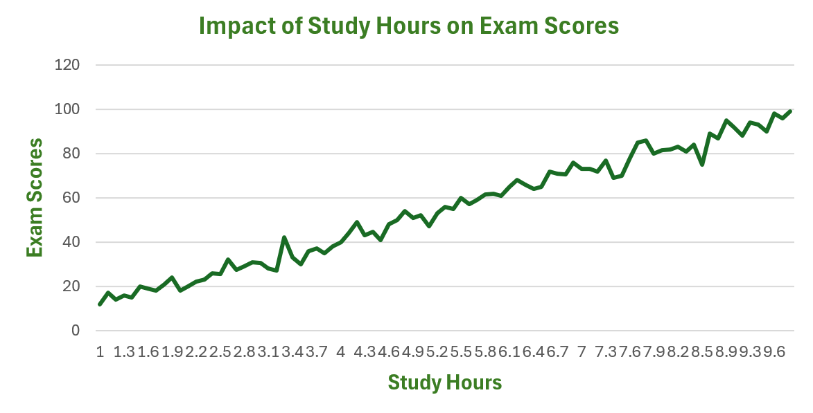
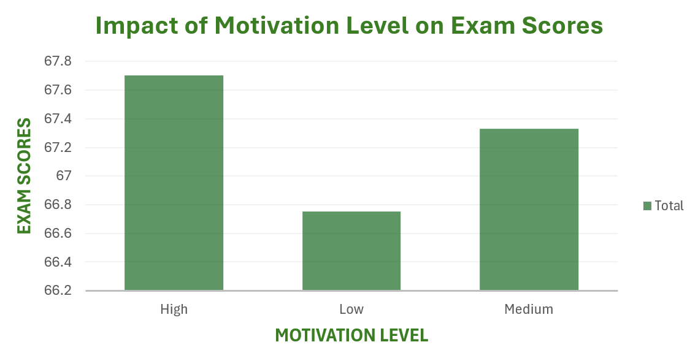

As seen from the line chart, study hours have a significant impact on students’ academic performance. Usually, the more hours a student study, the higher their exam scores will be. If you have a goal, work hard towards it, and you will surely be achieving it!!!

From this bar chart, we can also see how important it is to stay motivated to study because clearly we can see how dragging ourselves to study don’t help to achieve a higher score. This is more a reason to use Foxcus, since Foxcus enables you to stay motivated with our coin system, allowing you to purchase cute decorations on your desk as you study more and more.